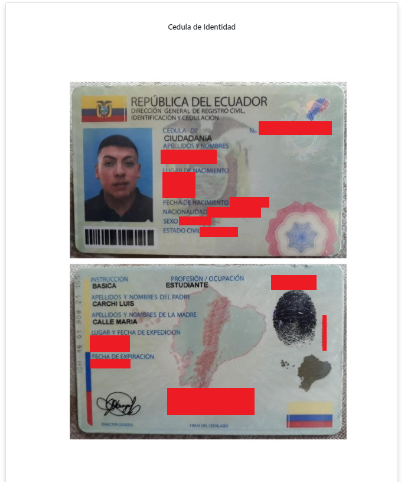
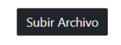

Este es un tutoria de como usar la aplicación API-CEDULAS-OCR, lo primero es ubicarse en la página principal y ubicarnos en Choose File (Seleccionar Archivo)
Luego escogemos una imagen con extenciones: .jpg, png, jpeg.
A continuacion se mostrará una previsualización de la imagen seleccionada.

Enviamos la imagen al servidor usando el boton Subir Archivo. Lo que hara una peticion al servidor y retornara los datos que se encuentre en el Documento.
}